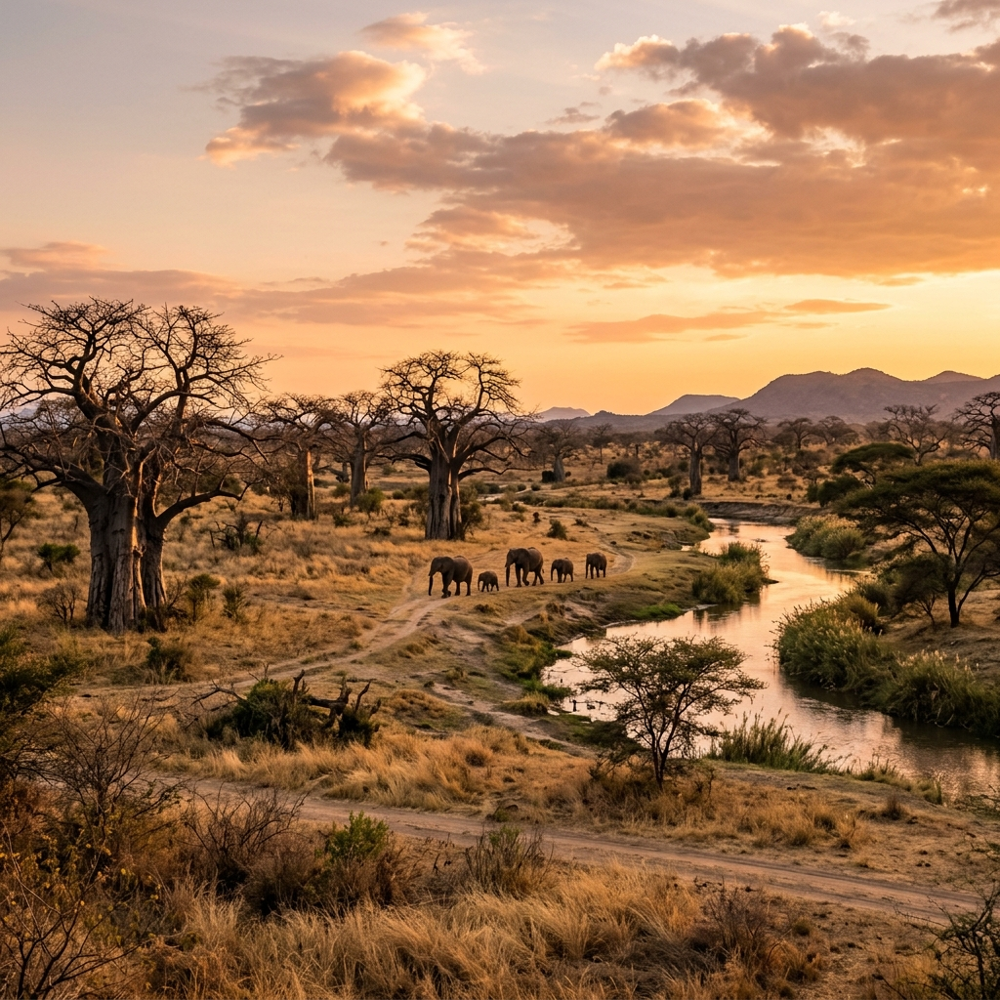

Tanzania's best-kept safari secret.
Tanzania's Serengeti National Park and Ngorongoro Conservation Area top the bucket list of many safari lovers. But, Ruaha National Park, another pristine wilderness located in the south-central part of the country, is considered Tanzania's best-kept safari secret.
Spanning more than 7,800 square miles, Ruaha is the largest national park in East Africa. The park is named for the Great Ruaha River, which flows along its southeast border and provides a vital source of water for animals during the dry season.
Its habitats range from rolling hills to open grasslands, and from groves of baobab trees to dense miombo and acacia woodlands. Lounging under the shade of a baobab tree, a baby elephant eagerly awaits her afternoon snack. Here, you're at crossroads between southern and eastern safari ecosystems.



Ruaha has the largest concentration of elephants in East Africa with a population of around 10,000 of these gentle giants. Ruaha is also home to 10% of global lion populations.
You also have a chance of seeing leopards, cheetahs, zebras, elands, giraffes, impalas, bat-eared foxes, snakes, crocodiles, and jackals. Ruaha's unique position on the verge of Southern Africa means that it is home to species from Southern and Eastern Africa.
The greater and lesser kudu can both be found at Ruaha. Whilst the greater kudu is traditionally found in Southern Africa, the lesser kudu is found in East Africa.
Ruaha is one of the few national parks in Tanzania where you can enjoy walking safaris. This gives you a unique perspective of the park and allows you to get closer to the smaller details of the bush.
Like most other Tanzanian national parks, it is best to visit Ruaha during the long dry season from June to October. It is relatively cool during this period compared to the hot dry season from mid-December to mid-March.
The dry season also provides great conditions for wildlife viewing because animals are drawn to the dwindling water sources and the grass is too short for them to hide. For bird enthusiasts, the European winter months (December to April) are the best time to visit.
Our travel specialists can help you customize an itinerary to this destination based on your budget, travel dates, and exact preferences.
Plan My Trip